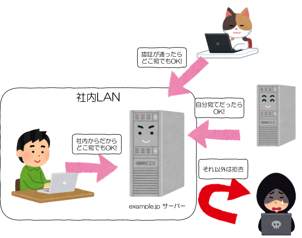

Net::SMTP
Nagano.rb #6
2020-11-28
とみたまさひろ
自己紹介

- とみたまさひろ
- https://twitter.com/tmtms
- https://tmtms.hatenablog.com
- https://zenn.dev/tmtms ←投げ銭はこちら
- MySQL / メール / 文字化け
- 富士通クラウドテクノロジーズ勤務
SMTP
Simple Mail Transfer Protocol
RFC 821(1982) → 2821(2001) → 5321(2008)
メールメッセージ形式は
RFC 822 → 2822 → 5322
ポート番号は 25 (smtp)
% nc smtp.example.com 25 ← 220 smtp.example.com ESMTP Postfix → EHLO client.example.net ← 250-smtp.example.com 250-PIPELINING 250-SIZE 102400000 250-VRFY 250-ETRN 250-STARTTLS 250-AUTH DIGEST-MD5 NTLM CRAM-MD5 PLAIN LOGIN 250-ENHANCEDSTATUSCODES 250-8BITMIME 250-DSN 250 SMTPUTF8
→ MAIL FROM:<sender@example.com> ← 250 2.1.0 Ok → RCPT TO:<rcpt1@example.com> ← 250 2.1.5 Ok → RCPT TO:<rcpt2@example.com> ← 250 2.1.5 Ok → DATA ← 354 End data with <CR><LF>.<CR><LF> → From: sender@example.com To: rcpt1@example.com Cc: rcpt2@example.com Subject: test message body . ← 250 2.0.0 Ok: queued as F074F9FB0E → QUIT ← 221 2.0.0 Bye
古き良き時代
迷惑メール
不正中継防止

直接迷惑メールを送りつけてくるやつ対策
Outbound Port 25 Blocking (OP25B)
接続元のプロバイダーが外向けの25ポートをブロック
プロバイダーが用意したメールサーバー経由でしか
外にメールを送れない
受信と送信(中継)の分離
受信(MX)
- TCP 25番ポート
- 自分宛のものしか受け付けない
- 一般ユーザーからは来ない
- 怪しいクライアントは拒否（設定次第）
- 送信者ドメインのSPFに登録されているか
- IPアドレスを逆引き＆正引きして
元のIPアドレスになるか - EHLO名がDNS上に存在しているか
送信(中継)
- TCP 587番ポート(submission)
- TCP 465番ポート(smtps, submissions)
- どこ宛でもOK
- 信頼できるクライアントからしか受け付けない
- ローカルネットワークのクライアント
- 認証が通ったクライアント
SMTP認証
メール送信時に認証が必要な場合
→ AUTH PLAIN dXNlcm5hbWUAdXNlcm5hbWUAcGFzc3dvcmQ= ← 235 2.7.0 Authentication successful
PLAIN はユーザー名とパスワードを
Base64 しただけの平文
CRAM-MD5 等を使えば Challenge-Response 方式の暗号化もできるけど
サーバー内に平文のパスワードを保持しておかないといけないのがイマイチ
通信暗号化(STARTTLS)
SMTP 接続後に STARTTLS 命令を発行すると
それ以降 TLS での暗号化通信になる
(465番ポートは接続時からTLS)
← 220 smtp.example.com ESMTP Postfix → EHLO client.example.net ← 250-smtp.example.com 250-STARTTLS ... → STARTTLS ← 220 2.0.0 Ready to start TLS --- ここから TLS 通信 --- → EHLO client.example.net ← 250-smtp.example.com ... → AUTH PLAIN dXNlcm5hbWUAdXNlcm5hbWUAcGFzc3dvcmQ= ← 235 2.7.0 Authentication successful
暗号化通信は手動ではできないので openssl を使う
% openssl s_client -connect smtp.example.com:587 -starttls smtp ...STARTTLS まで自動でやってくれる... --- ここから TLS 通信 --- → EHLO client.example.net ← 250-smtp.example.com ...
TLS証明書の検証
オレオレ証明書とか期限切れ証明書はエラーにしたい
% openssl s_client -connect smtp.example.com:587 -starttls smtp
-verify_return_error
...
Verification error: certificate has expired
---
New, TLSv1.3, Cipher is TLS_AES_256_GCM_SHA384
Secure Renegotiation IS NOT supported
Compression: NONE
Expansion: NONE
No ALPN negotiated
Early data was not sent
Verify return code: 10 (certificate has expired)
---
%
証明書ホスト名の検証
証明書が正しくても自分がアクセスしてるサーバー用の
証明書じゃないかもしれない
% openssl s_client -connect smtp.example.com:587 -starttls smtp
-verify_return_error -verify_hostname smtp.example.com
接続先に指定した文字列とは異なるサーバー名を
使いたいこともある(テストとかで)
% openssl s_client -connect 192.168.11.22:587 -starttls smtp -verify_return_error -verify_hostname smtp.example.com
ここから Ruby の話
Net::SMTP
めっちゃ簡単
require 'net/smtp'
Net::SMTP.start('smtp.example.com', 25) do |smtp|
smtp.send_message(<<EOS, 'sender@example.com',
'rcpt1@example.com', 'rcpt2@example.com')
From: sender@example.com
To: rcpt1@example.com
Cc: rcpt2@example.com
Subject: test
message body
EOS
end
SMTP認証
Net::SMTP.start('smtp.example.com', 587, 'client.example.net',
'username', 'password') do |smtp|
...
end
ユーザー名とパスワードを指定したいだけなのに
EHLO 名を書かないといけないのがイマイチ
認証が必要なのは送信サーバーに送信するとき
その場合は EHLO 名は重要ではないはず
デフォルトだとTLSじゃないんだけど
デフォルトの認証方式は PLAIN = 平文 😇
STARTTLS
Net::SMTP は start よりも前に
enabel_starttls が必要なのがイマイチ
smtp = Net::SMTP.new('smtp.example.com', 587)
smtp.enable_starttls
smtp.start('client.example.com', 'username', 'password') do
...
end
TLS(465番ポート)
enabel_starttls じゃなくて enable_tls
smtp = Net::SMTP.new('smtp.example.com', 465)
smtp.enable_tls
smtp.start('client.example.com', 'username', 'password') do
...
end
enable_starttls と enable_tls 両方指定するとエラー
証明書の検証
デフォルトでは検証しない
smtp = Net::SMTP.new('smtp.example.com', 587)
context = OpenSSL::SSL::SSLContext.new
context.set_params(verify_mode: OpenSSL::SSL::VERIFY_PEER)
smtp.enable_starttls(context)
smtp.start('client.example.com', 'username', 'password') do
...
end
かなりダメな感じになってきた…
証明書ホスト名の検証
デフォルトでは証明書の検証をしないのに
なぜかホスト名の検証だけはしてる(バグっぽい)
Net::SMTP は常に #start() の第1引数の文字列を使うので別のサーバー名を使うことはできない
smtp = Net::SMTP.new('192.168.11.22', 587)
context = OpenSSL::SSL::SSLContext.new
context.set_params(verify_mode: OpenSSL::SSL::VERIFY_PEER)
smtp.enable_starttls(context)
smtp.start('client.example.com', 'username', 'password')
#=> hostname "192.168.11.22" does not match the server
# certificate (OpenSSL::SSL::SSLError)
ということで
https://github.com/ruby/net-smtp/ の
コミット権をもらった
Net::SMTP は Ruby 2.7 から Gem になってる
キーワード引数化
Net::SMTP.start(hostname, port, helo_name, username, password, authtype)
↓
Net::SMTP.start(hostname, port, helo: helo_name,
user: username, password: password, authtype: authtype)
EHLO名を指定しなくても認証情報を指定可能
デフォルトで STARTTLS を使用 非互換！
Net::SMTP.start(hostname, port) { ... }
サーバーが対応していれば自動的に STARTTLS を使用
→ EHLO client.example.net ← 250-smtp.example.com 250-PIPELINING 250-SIZE 102400000 250-VRFY 250-ETRN 250-STARTTLS 250-AUTH DIGEST-MD5 NTLM CRAM-MD5 PLAIN LOGIN 250-ENHANCEDSTATUSCODES 250-8BITMIME 250-DSN 250 SMTPUTF8
STARTTLS を使用したくない場合はちょっと面倒
smtp = Net::SMTP.new(hostname, port)
smtp.disable_starttls
smtp.start { ... }
デフォルトでTLS証明書を検証 非互換！
検証したくない場合(テストとか)は
tls_verify: false を指定
Net::SMTP.start(hostname, port, tls_verify: false) { ... }
デフォルトでホスト名を検証
これは今までどおり
証明書を検証しない時はホスト名も検証しない(バグ修正)
接続用の名前と異なるホスト名で検証したい場合は
tls_hostname で指定
Net::SMTP.start('192.168.11.22', 587, tls_hostname: 'smtp.example.com') { ... }
net-smtp gem
Ruby 2.7 の人はこれで使える
% gem install net-smtp
正当な TLS 証明書を持ってないサーバーへの接続が
エラーになる可能性あり
オレオレ証明書とか